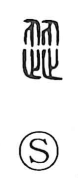

渋

Uncategorized
Kun: shiburu, shibui, shibu | On: juu
astringent ・ to not go smoothly ・ to hesitate
Explanation
Shirakawa traces this character to an older graph read ju that sets a 止 “footstep” and its inverted counterpart—here understood as 刃, an upside‑down form of 止—face to face. Two feet confronting one another cannot move forward, which gives the sense of hanging back or being at a standstill, as felt in words like jutai, “congestion.” With the addition of the water element, it depicts progress hindered by water, and this idea of resistance was extended to taste: something shibui is puckery, reluctant to go down the throat. In Japanese, shibu also names the tannic “persimmon juice” used for dyeing and waterproofing.